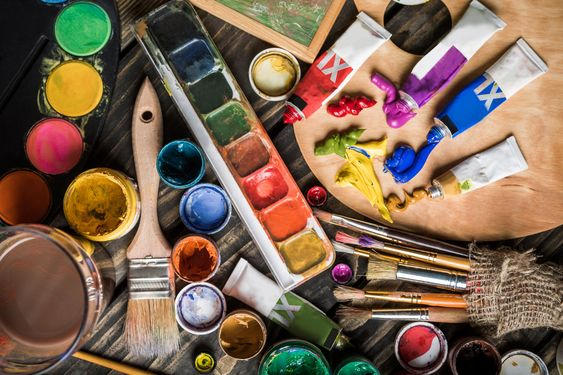
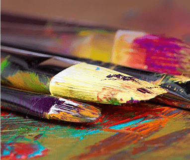
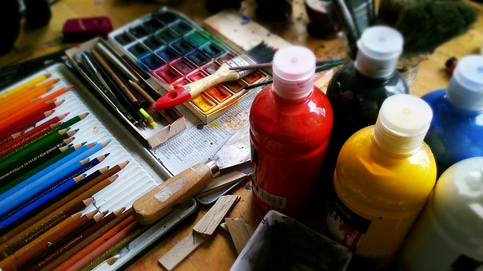
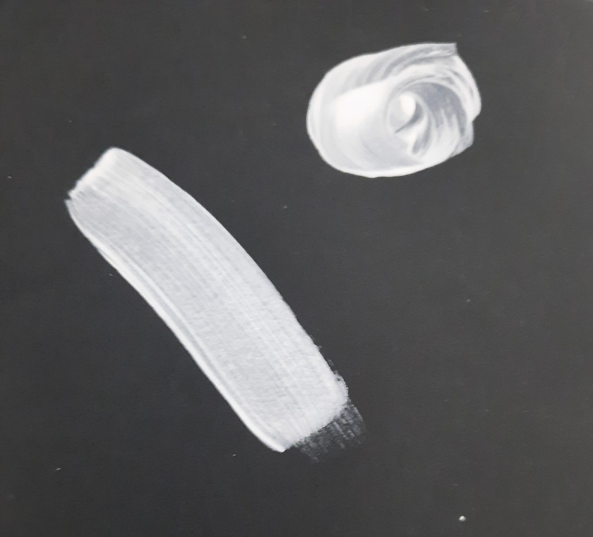
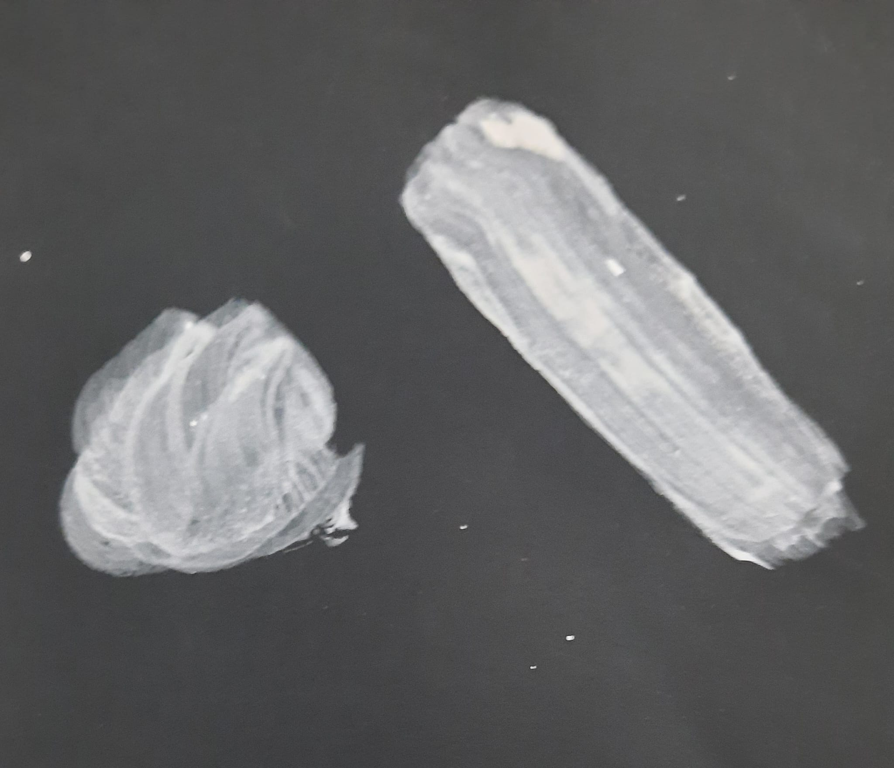

אקריל :
גואש :
צבעי מים :
עפרונות צבעוניים :


|  |  |  |
באתר הזה יהיה מידע על 4 סוגי חומרי ציור בסיסיים (זה המקסימום שאני יודעת) ורוב המידע למתנסיים חדשים בנושא כי אם אתה כבר שנים בתחום ומקצוען או שאולי פשות הלכתה ללמוד עם מורה מקצועי יש סיכוי שאתם כבר יודעים יותר ממני כי המידע פו זה אפשר לומר כול הניסיון שרחשתי בשנים של תחביב בשעות פנאי. אז אם יש לכם הצעות ועוד מידע אז רשמו אותו בדף ה''תרשמו'' .
אם אתם רוצים להתחיל עדיף שתתחילו להתנסות בחומר אחד לצבור קצת נסיון ואז אולי לעבור לאחר .אז אילו 4 סוגים בסיסים : אקריל , צבעי מים,אפרונות ,וגואש. ואחד ההבדלים הגדולים בניהם זה איך הם נראים על הנייר (מתחת אפשר לראות איך החומר נראה רק אחרי שכבה אחת של צבע ).
אקריל : |
גואש : |
צבעי מים : |
עפרונות צבעוניים : |
|  |  |
|
|
ואם אתם רוצים לדעת עוד על סוג חומר מסויים דפדפו לעמוד שלו
 עמוד ראשי
עמוד אקריל
עמוד ראשי
עמוד ראשי
עמוד ראשי
עמוד ראשי
עמוד ראשי
עמוד אקריל
עמוד ראשי
עמוד ראשי
עמוד ראשי
עמוד ראשי